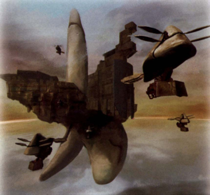
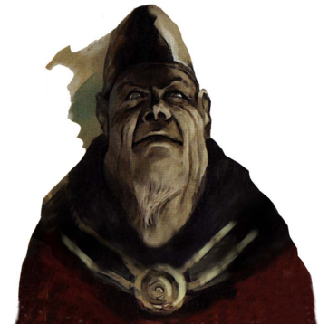

Imperial Forces Info Throughout Panzer Dragoon Saga, a powerful nation called the Empire, will attempt to gain ultimate power, while trying to destroy your dragon in the process. The Empire has gained their current power by excavating and reviving Ancient Age technology. They control a massive fleet of Imperial battleships that can obliterate any enemies that stand in their way. They are greedy, power hungry madmen who have destroyed many surrounding nations, in their conquest for supreme leadership. The man who controls the Empire is the Emperor. He is the seventh Emperor in the Imperial line. The Emperor resides on a gigantic battleship called Grig Orig. With the infinite power of this Ancient Age ship, he seeks to bring a path of destruction to all who oppose him. By controlling the most powerful of ancient technologies, the Empire plans to take over the world. You and your dragon are the only ones capable of standing up to such frightening power. |
 The Empire possesses a massive fleet of Ancient Age battleships with the destructive power to level a continent. The gigantic ship seen in the pic above is called the Grig Orig, the Emperors flagship. |
 The man who controls the Empire, the Emperor, seeks only to gain supreme control over all nations. With the most powerful of ancient technologies, he plans to take over the world. |